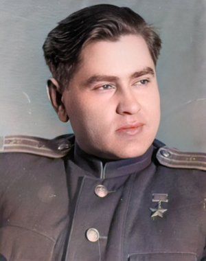

Алексей Петрович Маресьев

07.05.1916—18.05.2001
А. П. Маресьев — летчик-истребитель. Имя Алексея Петровича было увековечено Борисом Полевым в «Повести о настоящем человеке». 4 апреля в воздушном бою в Новгородской области истребитель Маресьев был подбит. Пытаясь совершить посадку на лёд замёрзшего озера, самолет упал в лес. А. П. Маресьев добирался ползком до своих, отморозил ступни ног, их пришлось ампутировать. Но Алексей Петрович не сдался. Когда ему сделали протезы, он начал тренироваться, планируя вернуться в строй. Ему это удалось, после чего Маресьев воевал на Курской дуге. Всего летчик совершил 86 боевых вылетов, уничтожив 11 самолётов противника.